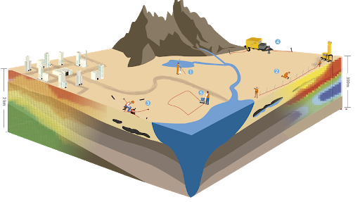
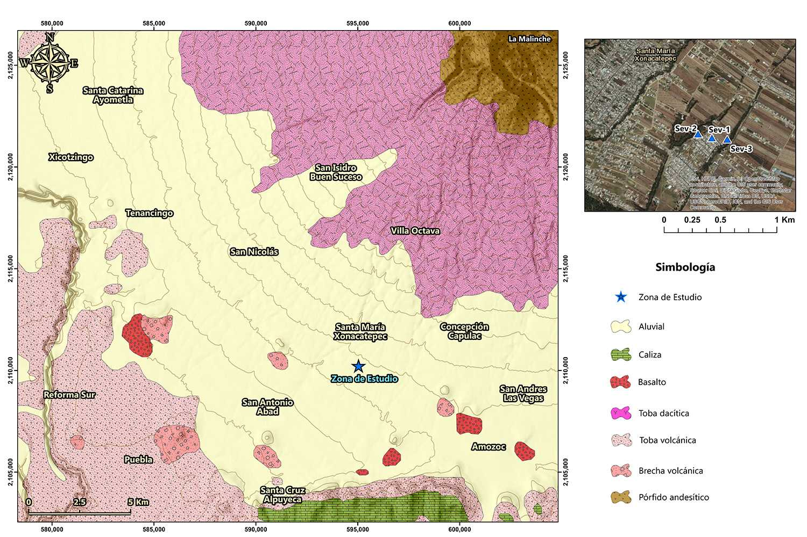

GEOLOGIA
EQUIPO7
5.3 Geohidrología.
La hidrogeología trata del estudio integral del agua subterránea, su distribución y evolución en tiempo y espacio en el marco de la geología regional.
La geohidrología se encarga de estudiar el comportamiento del agua en el ambiente geológico según las leyes de la hidráulica. Comprende la hidráulica de pozos, es decir de perforaciones para obtener agua con diferentes fines y el control de su comportamiento en el entorno, según el tipo de material perforado.
Ambas especialidades correlacionan la información geológica regional y local, superficial y del subsuelo para contribuir al aprovechamiento óptimo del agua subterránea en beneficio del desarrollo sustentable.
EL AGUA Y SU IMPORTANCIA:
El agua es la sustancia que ha permitido al ser humano establecerse en zonas determinadas y progresar en diversas tareas. Es el componente principal de la materia viva pues constituye del 50 al 90% de la masa de los organismos. El punto de congelación del agua es de 0 °C y su punto de ebullición de 100 °C; a la presión atmosférica 760 mm de mercurio; y a una temperatura de 4 °C alcanza su máxima densidad. El suministro de agua contaminada puede contribuir a la transmisión de enfermedades gastrointestinales como el cólera, la fiebre tifoidea, la disentería y la gastroenteritis, además de afecciones virales como la hepatitis infecciosa. También la carencia de agua para la higiene personal y el saneamiento del ambiente, son factores que contribuyen a la diseminación de estos males, por lo que es de vital importancia para todos los países, realizar estudios hidrogeológicos de manera intensiva y extensiva que permitan conocer con alta precisión la distribución, cantidad y calidad del agua con que cuentan en sus dominios territoriales para optimizar la planeación del desarrollo sustentable
ANÁLISIS GEOLÓGICO.
El análisis geológico es el estudio inicial para la prospección de agua subterránea, ya que los acuíferos son unidades litológicas capaces de almacenar y transmitir agua subterránea, lo cual depende principalmente de la permeabilidad y transmisividad de las rocas..
Como primera etapa para este análisis, se recopila información existente cercana al sitio en estudio, como cartografía, estudios previos y/o cercanos al sitio, etc, con la finalidad de conocer de una manera preliminar las condiciones generales de la zona.
Una vez recopilada la información, se realiza la verificación geológica en campo, delimitando las estructuras geológicas más importantes desde el punto de vista geohidrológico, ubicando además los sitios estratégicos para la exploración geofísica, encaminados a determinar los mejores sitios para exploración de agua subterránea.
5.4 Geomorfología.
A la geomorfología corresponde el estudio del relieve de la Tierra, que incluye las formas y estructuras de todas las dimensiones, desde continentes y cuencas oceánicas a estrías y alveolos. Los nombres de las mismas son de algunas centenas, a lo que agregamos los procesos que crean y modifican el relieve, así como las leyes, teorías, hipótesis, principios, métodos de estudio y otros temas. Ya que se trata de una disciplina geológico-geográfica es necesario incluir los términos geológicos principales relacionados con la constitución del relieve (minerales, rocas), con su construcción (estructuras), con su evolución en el tiempo y otros. El relieve se relaciona también con los elementos físico geográficos, como el suelo y el clima, principalmente.

Una buena cantidad de palabras provienen del lenguaje coloquial antiguo y moderno, algunas con su equivalente en cada idioma (montaña, bahía, lago, río, cima), otras, de un idioma y adoptadas por la comunidad internacional: barján, dolina, fiordo, graben, lahar, loes, morrena, nunatak, rift, solonchak, taiga, tsunami, tundra. Hay topónimos como karst y meandro. Se usan palabras que provienen de todos los continentes y lenguas diversas: árabe, chino, esquimal, indonesio. De lenguas prehispánicas usamos en México cenote, tepetate, tezontle, xalapazco. Este léxico constituye en sí mismo un esperanto geomorfológico.
Factores generadores de los procesos geomorfológicos
El relieve terrestre va evolucionando en la dinámica del ciclo geográfico mediante una serie de procesos constructivos y destructivos que se ven permanentemente afectados por la fuerza de gravedad que actúa como equilibradora de los desniveles; es decir, hace que las zonas elevadas tiendan a caer y colmatar las zonas deprimidas. Estos procesos hacen que el relieve transite por diferentes etapas. Los desencadenantes de los procesos geomorfológicos pueden categorizarse en cuatro grandes grupos:
Factores geográficos: El relieve se ve afectado tanto por factores bióticos como abióticos, de los cuales se consideran propiamente geográficos aquellos abióticos de origen exógeno, tales como la gravedad, el suelo, el clima y los cuerpos de agua. El clima con sus elementos tales como la presión, la temperatura, la humedad, los vientos. El agua superficial con la acción de la escorrentía, la acción fluvial y marina. Los hielos con el modelado glacial, entre otros. Son factores que ayudan al modelado, favoreciendo los procesos erosivos.
Factores bióticos: El efecto de los factores bióticos sobre el relieve suele oponerse a los procesos del modelado, especialmente considerando la vegetación, sin embargo, existen no pocos animales que colaboran con el proceso erosivo tales como los caprinos.
Factores geológicos: tales como la tectónica, el diastrofismo, la orogénesis y el vulcanismo, son procesos constructivos y de origen endógeno que se oponen al modelado e interrumpen el ciclo geográfico.
Factores antrópicos: La acción del hombre sobre el relieve es muy variable, dependiendo de la actividad que se realice, en este sentido y como comúnmente pasa con el hombre es muy difícil generalizar, pudiendo incidir a favor o en contra de los procesos erosivos.